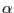
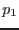
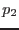
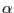
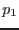
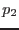
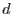
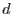

It is intended to flag in the RGS pipeline sources which are confused with the prime source, so as to allow the end user to assess whether these have a deleterious effect on the spectra of the prime source. For this purpose rgssources calculates, for each source, a value which is stored in a column called CONFUSION. This value is calculated from the following formula:
Here  is the confusion value, is the source brightness (ie value of the RATE column) and  and are respectively the dispersion and cross-dispersion angles in arcseconds. The constants , ,
is the confusion value, is the source brightness (ie value of the RATE column) and  and are respectively the dispersion and cross-dispersion angles in arcseconds. The constants , ,  ,
,  , and  will eventually be stored in CCF MiscData, but at present are `hard-wired' into the task code, with values as follows:
, and  will eventually be stored in CCF MiscData, but at present are `hard-wired' into the task code, with values as follows: